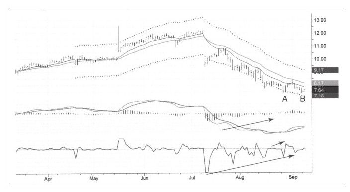
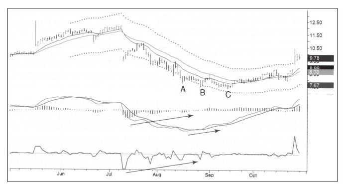
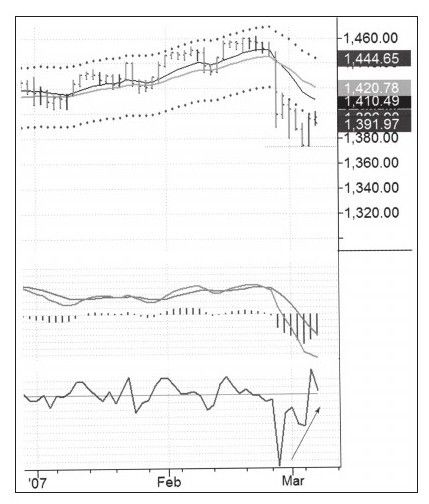
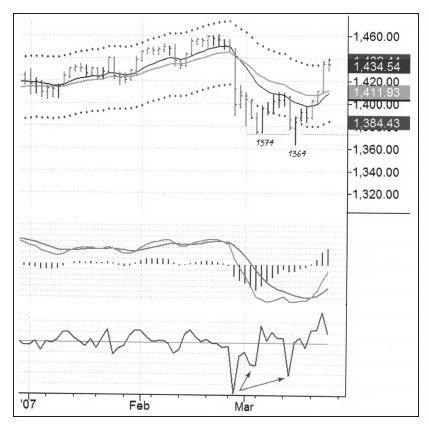
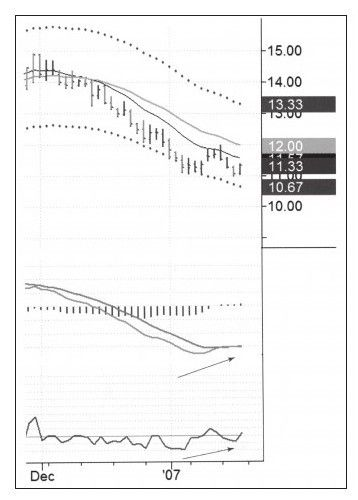
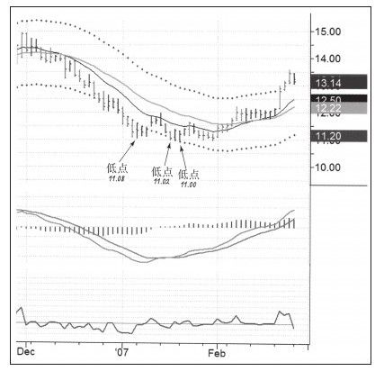

关于止损的最糟糕的认识是，只要价格低于最近的最低价就立即止损，这种观念由来已久并且在交易圈广为流传。因为这种方式很简单不需要太多思考，在交易生涯的早期我甚至也采用这种方法，直到被现实打击后才放弃。
这种止损方法的问题是市场经常会走出双底，第二个底可能略低于第一个底，我能找出很多这种案例来。价格只要低于最近的低点，业余交易者就立即砍仓出局，而职业交易者却可能选择入场。
每当价格形成一个底部区域我就开始关注股价是否会击穿前期低点，如果股价创出新低而指标没有创出新低，指标形成底背离，我就等待价格轻微上涨，当价格回到前期低点之上时，就是一个很好的买入信号。我认为这种假突破是最强烈、最可靠的交易信号——双底加底背离，以及第二个底稍低于第一个底（见图5-1和图5-2）。


这让那些年复一年把止损设在前期低点的人踌躇犹豫，为什么人们总愿意把止损放在最可能被打掉的位置呢？为什么这些人卖出的价格总是职业交易者可能买入的价格呢？
一些人为图方便，把止损设在前期低点，这人人都会做，大量的炒股图书也强调这种方式。职业交易者却不断利用大众把止损设在前期低点这个错误的做法而大发其财，他们知道很多止损就设在那里并将被触发。没有法律阻止职业交易者分析图表，他们希望找到大量止损发生的区域。
当股票跌向重要低点时成交量开始变小，所有眼睛只盯着股价但没有多少人行动，因为人们都在等着看这个支撑是否有效。买单很少的时候，一个轻微的卖单就能让股票下跌到前期低点，也就是很多严谨的职业交易者喜欢操作的地方。
当下跌的股价触发人们的止损时，职业交易者开始抢购“打折货”。如果有很多止损盘抛出，股价会加速下跌，人们快速砍掉亏损的头寸，以为股价会继续下跌，但这种情况很少发生。正常情况下，止损的股票并不是那么多，当这些卖盘被接住以后下跌就停住了，然后职业交易者入场疯狂地低价抢筹，股价随后又回到前期低点之上留下一个明显的长下影——职业交易者的钓鱼线。一群无名业余交易者的股票以折扣价卖给职业交易者，这种事有没有在你身上发生过？
我们该把止损设在哪里？请看图5-3至图5-6的案例。
把止损设在比前期低点低一分钱的位置很可能会丢了筹码。还有其他的选择吗？接下来我们学习一些可行的解决方案。



